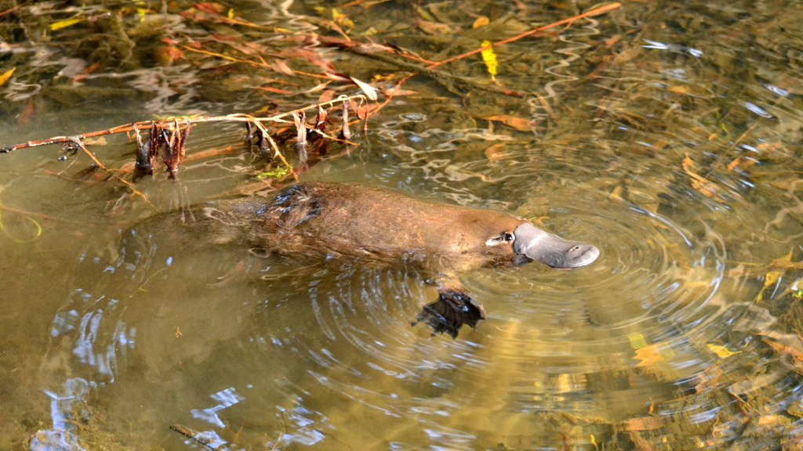

- distribution
- ecology
- behaviour
The platypus (Ornithorhynchus anatinus),[3] sometimes referred to as the duck-billed platypus,[4] is a semiaquatic, egg-laying mammal endemic to eastern Australia, including Tasmania. The platypus is the sole living representative or monotypic taxon of its family (Ornithorhynchidae) and genus (Ornithorhynchus), though a number of related species appear in the fossil record.
Together with the four species of echidna, it is one of the five extant species of monotremes, mammals that lay eggs instead of giving birth to live young. Like other monotremes, it senses prey through electrolocation. It is one of the few species of venomous mammals, as the male platypus has a spur on the hind foot that delivers a venom, capable of causing severe pain to humans. The unusual appearance of this egg-laying, duck-billed, beaver-tailed, otter-footed mammal baffled European naturalists when they first encountered it. In 1799, the first scientists to examine a preserved platypus body judged it a fake, made of several animals sewn together.
Together with the four species of echidna, it is one of the five extant species of monotremes, mammals that lay eggs instead of giving birth to live young. Like other monotremes, it senses prey through electrolocation. It is one of the few species of venomous mammals, as the male platypus has a spur on the hind foot that delivers a venom, capable of causing severe pain to humans. The unusual appearance of this egg-laying, duck-billed, beaver-tailed, otter-footed mammal baffled European naturalists when they first encountered it. In 1799, the first scientists to examine a preserved platypus body judged it a fake, made of several animals sewn together.
